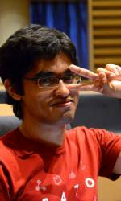

| Master Dan Chuang | |
| Sabumnim ('00-present) | |
| Master Dan Chuang started the MIT Sport Taekwondo Club in the fall of 2000 when he first began teaching Physical Education at MIT. Since then, he has coached the club to 3 National Overall Collegiate Taekwondo Championships (2004, 2008, 2009), and 5 Eastern Collegiate Taekwondo Conference titles (2003, 2004, 2005, 2006, 2009). He also served US National Collegiate Team Coach at the 2008 World University Taekwondo Championships and 2009 Summer World University Games. He really is passionate about working with collegiate athletes and watching students using Taekwondo as a vehicle to grow.
Master Chuang is also responsible for organizing collegiate Taekwondo at the regional and national level. He is director of the Eastern Collegiate Taekwondo Conference (ECTC), and also serves as Secretary General of the National Collegiate Taekwondo Association (NCTA). He is also the head instructor of C.W. Taekwondo at Boston, a non-profit Taekwondo school located in Central Square, Cambridge. Master Chuang is a 6th degree black belt, promoted by Master Han Don Cho of Cornell University. When he's not training or teaching, Master Chuang works full time as an engineering manager. Links:
|
|
| Tara Sarathi | |
| Instructor ('11-present) | |
| Tara started taekwondo as a freshman in the PE class. Ever since joining, the club has proved to be a home away from home (especially at tournaments). When not at practice or studying, Tara enjoys working in the chemistry lab, and writing and filming movies | |
 |
Andy Guatemala |
| Instructor ('11-present) | |
 |
Chris Williams |
| Instructor ('11-present) | |
| Anye Li | |
| Instructor ('07-present) | |
 |
Enrique Fernandez |
| Instructor ( -present) | |
| Michelle Chen | |
| Instructor ( -present) | |
| Michelle aka Machine is a Electrical Engineering/Computer Science graduate. She has trained under Master Ran Zohar and Grand Master Won Kee Min. After taking a brief hiatus from Taekwondo during her high school years, Machine has been back at the club for years and is always ready to fight. When not training, she can be seen running, smiling or eating cookies/ice cream (or both). | |
| Maria Alexis | |
| Instructor ( -present) | |
|  | Tahin Syed |
| Instructor ( -present) | |
| Tiffany Chen | |
| Instructor ( -present) | |